Carrozzeria Vignale · Nardi
Nardi (Derivata Lancia) Raggio Azzurro I and II
1955 + 1958
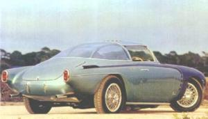
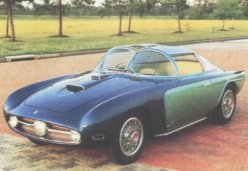
Built in 1955, a fantastic bubble topped creation at the commission of Enrico Nardi, the first of what would be a series of only two concept cars based around Lancia Aurelia V6 mechanicals. Raggio Azzurro I was based on what was to have been a Carrera Pan American road racing chassis created by Nardi Torino. In 1958 a second more sedate car, Raggio Azzurro II, was created. It was also built around Lancia Aurelia mechanicals, only this time the chassis was a modified Aurelia B20. The styling was penned by Vignale understudy Giovanni Michelotti. In 1992 a third car was built, commissioned by the Nardi Co to celebrate their 60th anniversary, but that’s another story!
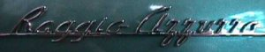
Text and images courtesy of Jim Simpson of Simpson Design & Development.
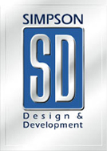
Thank Heavens For Little Lancia Rocketships
By John Lamm · Photos by the Author · Exotic Cars Quarterly, Spring ‘91
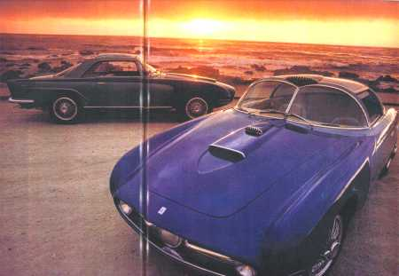
Being a pack rat seems to have been crucial to being the librarian at Road & Track. Thank goodness. You can often thumb through the file collected on any given automaker, even the small firms, and take a trip through their history as seen in everything from aging photos to old press releases to handwritten notes.
So we work our way through the Nardi file. There’s nothing from the pre-Road & Track period, when Enrico Nardi was building his first race car, the Nardi-Monaco with a 998-cc JAP engine, in 1932. Or from his time working for Lancia, then with Enzo Ferrari, when Ferrari was testing his first car, the 815.
Get past World War II, however, and the R&T file kicks in. We notice first that there’s a new company, and while it’s referred to as Nardi & C, the initials on the badge are ND, because Enrico Nardi had teamed up with Renato Danese, and though they then split up, the ND stayed. Probably had badges to use up.
Now we find all manner of photos and other materials, mainly of cars in the sub-1000-cc classes that were so important in war-drained Italy. One example is a bulbous 500-cc race car that looks like something Donald Duck would have driven if only he’d chosen a racing career.
There are many pictures of Nardi’s very successful 750-cc cycle-fendered race cars with 50-bhp BMW motorcycle-based engines fitted in the extreme nose — cylinder barrels sticking out the sides – but driving the rear wheels. We even find a story on a strikingly beautiful little coupe with the same chassis.
There are photos of other small sports cars, and on the back of one is the stamp “Carrozzeria Frua,” and the pencilled note, “Nardi 750 cc.” Actor William Holden and a 750-cc Nardi-Vignale coupe designed by Michelotti are posed in front of Universal Auto in North Hollywood. Scribbled in the margin of the accompanying release is the note, “Ken Miles works here!” A Kurt Worner photograph shows a Crosley-powered Nardi race car at Le Mans. There’s the stillborn mid-engine Nardi Formula 2 car with a Lancia Aurelia V-6, one version of the engine having a row of six Amal carburetors. Nardi’s shops in Turin were around the corner from Lancia, where he had strong ties. Then comes the 1955 Le Mans car, a twin-fuselage machine with the driver in one pod and the 750-cc 4-cylinder Giannini twincam drivetrain in the other pod.
Interesting as it was, the Le Mans car retired early on, and with it so did Nardi’s racing program, but not the activity for which the company is most famous. We know Nardi best for the beautiful steering wheels it has produced for so long, but that was just one item on a long list of specialty equipment created by the firm. There are high-performance camshafts, crankshafts and oil pumps in the advertising flyers in R&T’s file on Nardi. At the time when many automakers still put shift levers on steering columns, Nardi would sell you a conversion kit to move the shifter to the floor. There were steel stud sets for your tires for winter driving. Most important were the dual-carburetor manifolds for your MG, Fiat, Simca, Crosley, Peugeot or Alfa Romeo. If you wanted to get your Volkswagen from 26 to 31 bhp, Nardi had the kit. Personally, I wish I had a Nardi 2-Weber carb setup on my Lancia B20.
Also hidden away in the file is a pair of black-and-white photos, plus a color cover from Holland’s Auto Visie magazine. Featured in the photos are two different automobiles credited to Nardi, a pair of show cars.
Change locales, if you will, from Road & Track’s library to the back lawn of the Pebble Beach Lodge… the only difference being that the food is better at the Lodge. One of the more popular additions at the Pebble Beach Concours the past few years has been the inclusion of many of the show cars that have stirred our interest for decades.
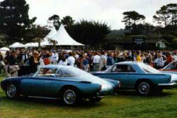
Parked together at the 1990 concours were the two Nardi show cars, properly called Blue Ray 1 and Blue Ray 2, or Raggio Azzurro in Italian.
During the Fifties, it wasn’t unusual for Italian specialty car firms to make one-of automobiles for clients. Hidden in that R&T Nardi file are several examples, one a 2.0-liter coupe for Count Rodolfo Crespi Telaio. There’s also a strange Michelotti-bodied, Plymouth-engine GT called the Silver Ray, which turned out to be the last car Nardi built. The customer’s name was Bill Simpson, and we will meet him again.
But years before the Silver Ray, still filled with hope, Nardi built two Lancia-based show cars to prove his company’s abilities. Blue Ray 1 was done for the 1955 Turin auto show, and was later shown at the Paris and New York shows. Blue Ray 2 followed three years later.
Both cars were designed by Michelotti and constructed by Vignale. The first car is the more outrageous of the two, from its large center headlamp back to its pointy taillights, complete with little rocketship fins. The top is of blue Perspex (plastic) with side windows that push up into the top. In the center of the roof’s leading edge is a grilled air scoop. While the body is done in aluminum alloy, the chassis and roof frame are in steel.
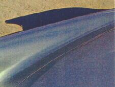
Under the first Raggio Azzurro is a Panamerican road racing tubular chassis built by Nardi off a 4th-series Lancia B20 coupe. This heritage means the car has Lancia’s well known sliding pillar front suspension with a De Dion rear suspension on semi-elliptic springs, using a Panhard rod for lateral location. Brakes are drums front and rear, the backs mounted inboard, while the 68-spoke wire wheels were special, crafted by Borrani.
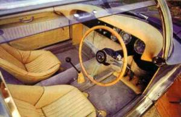
The engine is from a B20, with 2.5 liters and, quite naturally, a Nardi manifold with a pair of Weber 40DCZ5 carbs. As in all B20s, the gearbox is at the back, shifted through a Nardi floor linkage. In this trim, the engine is capable of 190 bhp at 5500 rpm, while the Blue Ray 1 should top out at more than 140 mph.
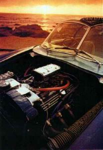
Blue Ray 2 is a more conservative design than the first, with conventional roll-up side windows. The car still has a sliding blue Perspex roof, but this time it’s the common sunroof style. The interiors of both cars are done in chamois leather upholstery and feel open and light, very inviting.
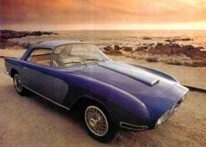
Again Lancia chassis components were used, these from a 4th-series B24 spyder. While the suspension is the same as Blue Ray 1, the front and rear of the stock chassis were grafted to a new center section and firewall, with the chassis generally stiffer than in the production car. While the drivetrain is also the same as Blue Ray 1, Nardi didn’t add the full 2-carb kit, but used his own single-Weber intake manifold, keeping power in the range of 140 bhp.
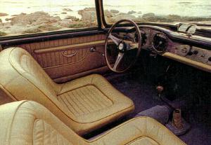
Often the current owner of a vintage car is really just a footnote in the car’s history, but Jim Simpson is an integral part of the story of this pair, even though he’s the same age as Blue Ray number 1. Both man and car were only 14 years old when Jim first saw a photo of the Nardi in a magazine and fell in love with it. Two years later, the young Houston native bought his first Lancia, a crashed Fulvia Zagato for $800. His parents thought he was crazy.
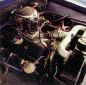
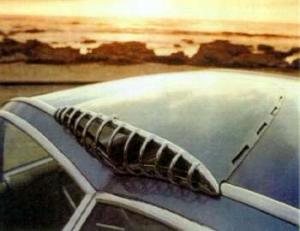
Two more years, and Jim, by then 18, was on the trail of the Blue Ray he remembered from the magazine, tracing it through members of the national Lancia Club. Tom Sheehan, owner of the Lancia Parts Consortium, and something of a legend among owners of the marque, told Jim that a man called Bill Simpson — the man who bought the Silver Ray — had the car in Coral Gables, Florida. Phone calls were exchanged, then photos. What Bill had, however, wasn’t the car Jim wanted, but Blue Ray number 2. It was for sale. That was close enough for Jim, who borrowed money from his parents — now they were certain he was nuts — and took his first commercial airplane ride to get the car.
Potential disappointment awaited. Bill was kind enough to pick up young Jim at the airport, only to inform him that a representative of Harrah’s Automobile Collection was also there, ready to buy the Blue Ray. Jim’s heart sank. He told Jim that, sorry, but there was no way he could compete with the wealth of Harrah’s. “But you have to see the car,” he was told. And when he finally saw the Blue Ray, Jim knew just how much he wanted it. That still didn’t make up for the museum’s money.
“But you haven’t driven the car,” Bill said. So Jim did and loved it, even though that didn’t compensate for the price Harrah’s could pay.
Turns out, however, that Bill Simpson is one of those heroes we all dreamed of meeting when we were rich with car dreams but poor in cash. He sold the car to Jim Simpson because he thought it was just what the teenager needed as a centerpiece for his fledgling collection of cars. Bill even knocked $500 off the price to help the young man get started on the renovation of Blue Ray 2. Bill and Jim still correspond with one another.
What’s more, Bill knew who owned Blue Ray 1. Seems he had known Enrico Nardi and bought that first car when its days on the show circuit were finished. He later sold it, and Malcolm Ringel, an Atlanta attorney, had ended up with Blue Ray 1. Arrangements were made for Jim Simpson to stop off in Atlanta on his way home to see the other car. Parental concern deepened even more.
Ringel met him at the airport in Blue Ray 1, and promised that if it was ever for sale, Simpson could have it. A year later, the Texan owned both Nardi show cars.
Eventually, Jim also had his own restoration shop, Contemporary Classics International, in Houston. Along the way he collected other Italian automobiles, and even drove Blue Ray 2 as daily transportation for two years. He enjoyed his time using the Blue Ray 2 as a daily driver, pointing out that it’s quite reliable. The car is a gentleman, civilized in traffic, with plenty of torque and flexibility for normal use. Blue Ray 1, as its styling suggests, is a more aggressive machine, more highly strung with all its engine modifications. Where the ride in the second car is comfortable, in the first model it’s firmer, more like a race machine, but so is the handling. Jim Simpson has a thick file of correspondence between Enrico Nardi and Bill Simpson, including letters about changing Blue Ray 1’s spring rates and chassis setup.
Blue Ray 1 was restored for the 1989 Pebble Beach Concours, after which Jim and company redid Blue Ray 2 so the pair could be shown together at last year’s show at Pebble Beach.
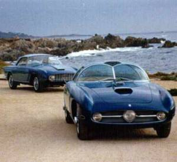
They make a lovely couple.
Driving home from Pebble Beach, fresh from the race and concours weekend, amazed once again by the cost of it all, and with the bidding of Christies’ auction still ringing in my head, I kept remembering Jim Simpson. Here was a modest Texan who had two cars in the world’s most famous concours, not because of his rolls of money or letters of credit, but because when he was a teenager, he was crazy enough about this show car he saw in a magazine article that he just wouldn’t rest until he owned it. We should all be so crazy.
© 1999 Simpson Design & Development